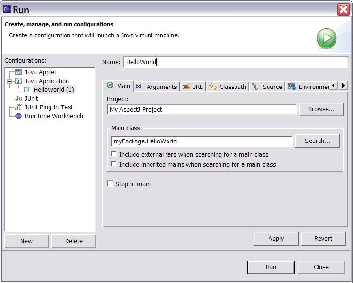
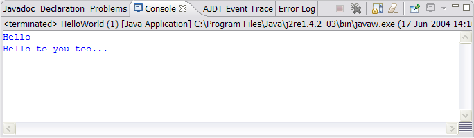

Copyright © 2004 Eclipse.org.
All Rights Reserved
Running an AspectJ Program
A Simple Application
-
Select your AspectJ project in the Package Explorer. Drop-down the “run” icon on the toolbar and click “Run…” Select “Java Application” in the left-hand tab and click “New.”
Name this configuration “HelloWorld” and then click “Search” to find the main class. Select “HelloWorld”.

-
Click “Apply” and then “Run”.
You should see the output of the HelloWorld class and the World aspect in the console.

-
To run this configuration again, just click on the “run” icon on the toolbar.
Advanced Applications
From 1.2.0 M1 AJDT provides its own launcher. This supports main methods in aspects and projects defining an aspect path. Note that the Java launcher can be used as illustrated above if you do not require either of the aforementioned features.
-
Click on the 'Main' tab of the launch configuration pane and click 'Search' to bring up a dialog that contains all the classes and aspects in scope that have main methods.
-
Switch to the classpath tab to see that your aspect path has been successfully detected. Note that the aspect path should be set on the 'Aspect Path' project properties page since changing it here will only change the classpath for this launch configuration, not the input to the AspectJ compiler.